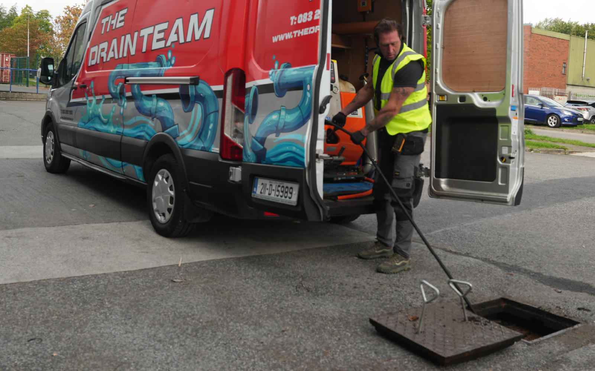

HIGH PRESSURE
JETTING
Powerful high-pressure water jetting used to clear stubborn blockages, grease, debris and build-up from drainage systems.
High-pressure drain cleaning
Clears stubborn blockages
Removes grease and debris build-up
Suitable for domestic and commercial drains